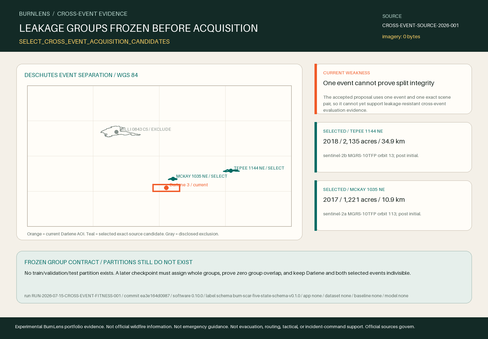

SELECT_CROSS_EVENT_ACQUISITION_CANDIDATES
Two current MTBS event groups inside Deschutes County have non-overlapping boundaries and exact, compatible Sentinel-2 metadata pairs. Acquire only these frozen products next; availability is not pixel fitness.
Visual review: ACCEPT_METADATA_FEASIBILITY — Accepted after original-resolution 1800x1250 PNG review and live semantic browser review: one H1, ten total headings, three candidate rows, exact scene IDs, warning and no-partition boundary visible; image complete at native size.

CROSS-EVENT-FITNESS-2026-001; run RUN-2026-07-15-CROSS-EVENT-FITNESS-001; source commit ea3e164d09872825a0fadc64b9492e30c85c83c8.Candidate inventory and exact scene identities
| Event | Time / size | From Darlene | Exact Sentinel pair | Disposition / reason |
|---|---|---|---|---|
TEPEE 1144 NEOR4383912111420180907 | 2018 2,135 acres | 34.926 km | S2B_MSIL2A_20180811T185909_N0500_R013_T10TFP_20230815T160827S2B_MSIL2A_20180920T190049_N0500_R013_T10TFP_20230803T120358 | SELECTED_FOR_EXACT_SOURCE_ACQUISITION ALL_METADATA_FEASIBILITY_RULES_PASS |
MCKAY 1035 NEOR4375212142520170829 | 2017 1,221 acres | 10.925 km | S2A_MSIL2A_20170729T184921_N0500_R113_T10TFP_20230917T022841S2A_MSIL2A_20170927T185131_N0500_R113_T10TFP_20230824T183525 | SELECTED_FOR_EXACT_SOURCE_ACQUISITION ALL_METADATA_FEASIBILITY_RULES_PASS |
MILLI 0843 CSOR4425712174320170811 | 2017 24,065 acres | 69.789 km | None | EXCLUDED_FROM_ACQUISITION NO_COMPATIBLE_LOW_CLOUD_SINGLE_TILE_PAIR |
Scene selection uses catalogue-level cloud metadata only. Local pixels remain uninspected.
Leakage groups, not data partitions
GROUPS_FROZEN_PARTITIONS_NOT_CREATED
- Event
- All future tiles or chips derived from one MTBS fire ID stay in one evaluation role.
- Scene
- All derivatives from either scene in one exact pre/post pair stay with that event group.
- Geography
- Overlapping AOIs or MTBS boundaries may not cross evaluation roles.
- Time
- Acquisitions from the same event window may not cross evaluation roles.
- Partition gate
- No train/validation/test partition exists. A later checkpoint must assign whole groups, prove zero group overlap, and keep Darlene and both selected events indivisible.
event-darlene3-2024toevent-mckay-1035-ne-2017: 10.925 kmevent-darlene3-2024toevent-tepee-1144-ne-2018: 34.926 kmevent-mckay-1035-ne-2017toevent-tepee-1144-ne-2018: 27.258 km
Distance is a disclosed spatial-separation diagnostic, not proof of ecological independence. Exact event, scene, geography, and time groups are the leakage-control units.
Terms and source roles
RESOLVED_FOR_METADATA_FEASIBILITY_AND_SENTINEL_ACQUISITION_PLANNING
- Census TIGER
- U.S. Census TIGER technical guidance says Census government works may be reproduced and asks that the Census Bureau be cited as source.
- MTBS
- USGS public-domain guidance applies to USGS-authored material while preserving third-party exceptions; BurnLens attributes both MTBS partner agencies and makes no endorsement claim.
- Copernicus Sentinel
- CDSE terms state Sentinel access and use are free, full, and open subject to the Sentinel legal notice; the current STAC collection exposes that legal notice as its license link.
MTBS: Monitoring Trends in Burn Severity program, jointly administered by the U.S. Geological Survey and USDA Forest Service. County geometry: U.S. Census Bureau TIGERweb. Sentinel-2 metadata: Copernicus Data Space Ecosystem / European Union Copernicus programme. No endorsement implied.
- MTBS Program — analyst interpretation, source selection, boundary delineation, uncertainty, and distribution method
- MTBS Program — fire-level products, scale, access, revision, and interpretation limits
- MTBS Program — current quarterly production and revision schedule
- Copernicus Data Space Ecosystem — current public STAC search behavior and metadata filtering
- Copernicus Data Space Ecosystem — current ecosystem terms and Sentinel data legal-notice precedence
- U.S. Census Bureau — TIGER reproduction and Census source-citation guidance
- U.S. Geological Survey — USGS public-domain rule and third-party exceptions
Permitted claims
- Current official metadata supports exact source acquisition planning for two additional Deschutes County fire events.
- The event, scene, geography, and time groups are frozen before any future tiling or partitioning.
- MTBS is analyst-interpreted cross-fire reference evidence and Sentinel STAC metadata is availability evidence.
Prohibited claims
- No selected Sentinel product has been downloaded or inspected for local pixel fitness in this checkpoint.
- No MTBS boundary is field truth or an automatic burned-pixel label.
- No dataset, train/validation/test split, baseline, model, accuracy, or generalization claim exists.
- No official, endorsed, operational, emergency-ready, or field-validated status is implied.
Limitations that remain binding
- Sentinel product cloud cover is tile-level catalogue metadata, not local cloud, smoke, shadow, snow, or valid-pixel QA over each fire boundary.
- MTBS boundaries and severity products are analyst-interpreted remotely sensed reference evidence and may be revised in later quarterly releases.
- Representative-point distance does not prove ecological independence or eliminate spatial autocorrelation.
- County membership uses the MTBS representative point; selected fire boundaries may cross jurisdiction lines.
- Metadata availability does not prove authenticated download success, archive integrity, local registration, label fitness, or model generalization.
- The current label proposal and its QA were produced by the same Codex director and have no independent human inter-rater validation.
Phase and portfolio comparison
- Phase Two Objective Four
- Improves reproducibility and model-readiness evidence by proving candidate event groups before source acquisition; it does not yet prove a versioned dataset or leakage-resistant partition.
- Phase Two Objective Five
- Makes a future baseline comparison more credible by freezing independent evaluation units; no baseline or model exists yet.
- Portfolio narrative
- Shows disciplined restraint: BurnLens exposes one-event risk and sources the next two events before claiming dataset breadth or generalization.
Traceability
- Repository / issue
- drwbkr1/burnlens-deschutes / #357
- Source snapshot
CROSS-EVENT-SOURCE-2026-001, accessed 2026-07-15T22:40:43Z- Software / target / AOI / label schema
- 0.10.0 /
target-burn-scar-v0.2.0/aoi-darlene3-model-v0.2.0/burn-scar-five-state-schema-v0.1.0 - Application / dataset / baseline / model
- Not created / not created / not created / not created
- Run / source commit
RUN-2026-07-15-CROSS-EVENT-FITNESS-001/ea3e164d09872825a0fadc64b9492e30c85c83c8
Official emergency and incident sources govern public-safety decisions. Within this experiment, frozen exact source bytes and provider metadata govern derived evidence; MTBS remains cross-fire reference, not automatic truth.
Experimental BurnLens portfolio evidence. Not official wildfire information. Not emergency guidance. Not evacuation, routing, tactical, or incident-command support. Official sources govern.